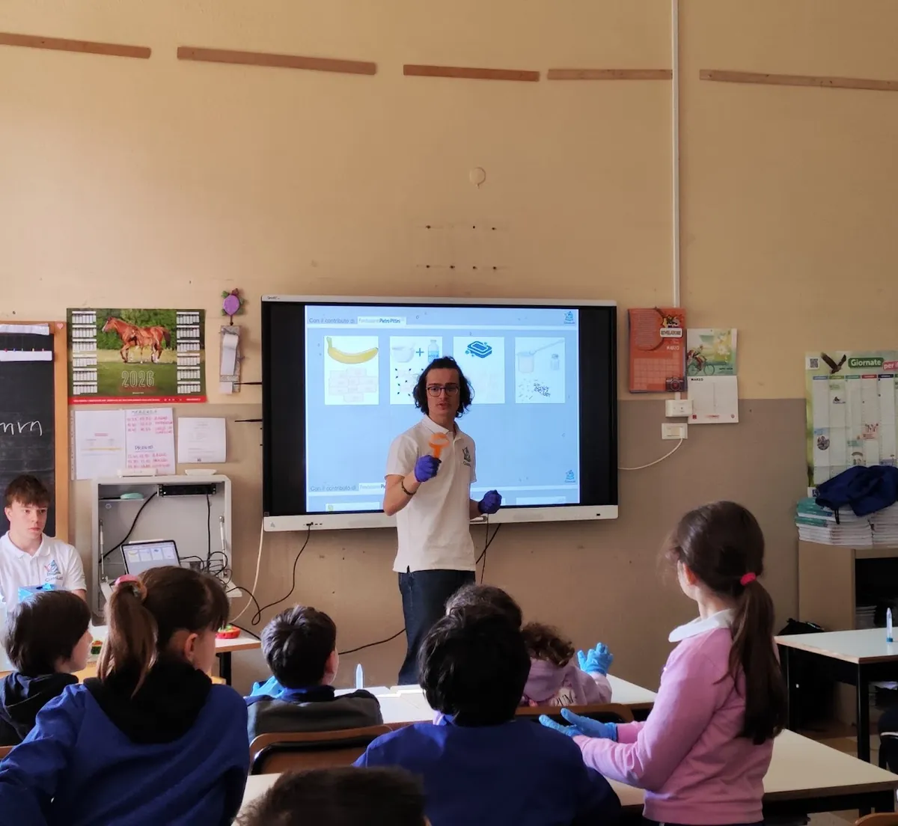

Una nuova dimensione
L'edizione 2025/26 ha rappresentato il più importante salto di qualità nella storia di ClassLab ODV. Nato come un progetto locale, in quell'anno ha iniziato a superare i confini della provincia di Trieste, portando il proprio modello di divulgazione scientifica anche nelle province di Padova, Gorizia e Pordenone. Un'espansione che ha confermato come un'idea nata tra i banchi di scuola possa diventare un punto di riferimento per la divulgazione scientifica rivolta ai più giovani.
I numeri raccontano questa crescita: 49 classi, oltre 1.100 studenti coinvolti e un team di 6 studenti-divulgatori, tutti formati secondo il modello della peer education che da sempre caratterizza il progetto. Grazie all'impegno dei volontari e al continuo perfezionamento delle attività, ClassLab è riuscito a raggiungere un numero sempre maggiore di scuole senza perdere quell'approccio pratico, coinvolgente e vicino agli studenti che ne costituisce il punto di forza.

L'anno è stato inoltre segnato da importanti collaborazioni. Tra queste spicca quella con AIRC, che ha scelto ClassLab per portare nelle scuole uno dei propri moduli didattici dedicati alla ricerca scientifica e alla prevenzione. L'integrazione del materiale AIRC all'interno delle nostre attività ha permesso agli studenti di conoscere ancora più da vicino il mondo della ricerca biomedica e l'importanza della scienza nella tutela della salute.
ClassLab è uscito anche dalle aule scolastiche, partecipando a numerosi eventi di divulgazione aperti al pubblico. In occasione della Giornata dei Diritti dei Fanciulli, organizzata dal Comune di San Vito al Tagliamento, il progetto ha proposto un'intera giornata di laboratori e attività scientifiche che ha registrato una partecipazione superiore alle aspettative, coinvolgendo quasi un centinaio di bambini e famiglie.
Durante l'anno il team ha inoltre preso parte al FVG Young Festival e allo Science Under 18 Isontino, due importanti manifestazioni dedicate alla promozione della cultura scientifica tra i giovani. Questi eventi hanno rappresentato un'occasione preziosa per condividere il metodo ClassLab con un pubblico ancora più ampio, confrontarsi con altre realtà educative e dimostrare come la sperimentazione pratica possa trasformare la biologia in un'esperienza coinvolgente e accessibile.
Portiamo la scienza nella tua classe
Laboratori pratici, guidati da giovani divulgatori e completamente gratuiti per le scuole.